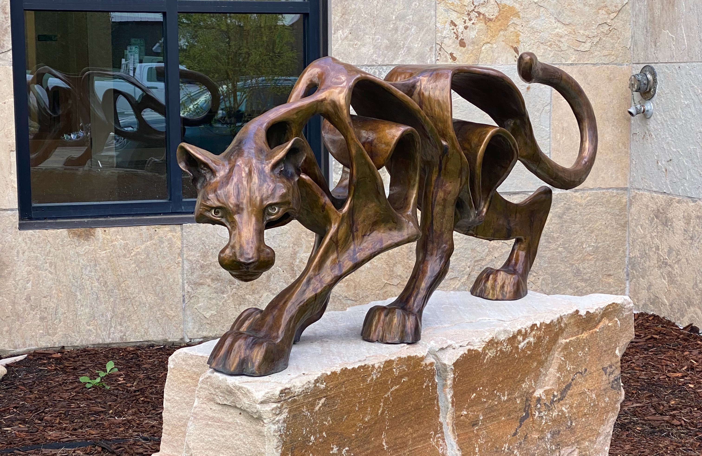
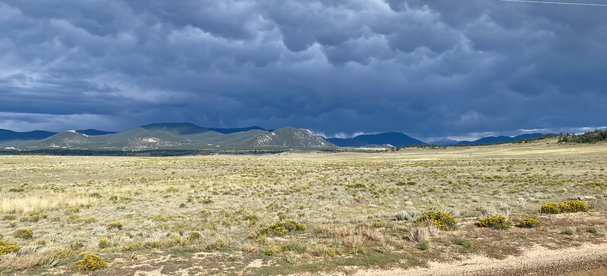
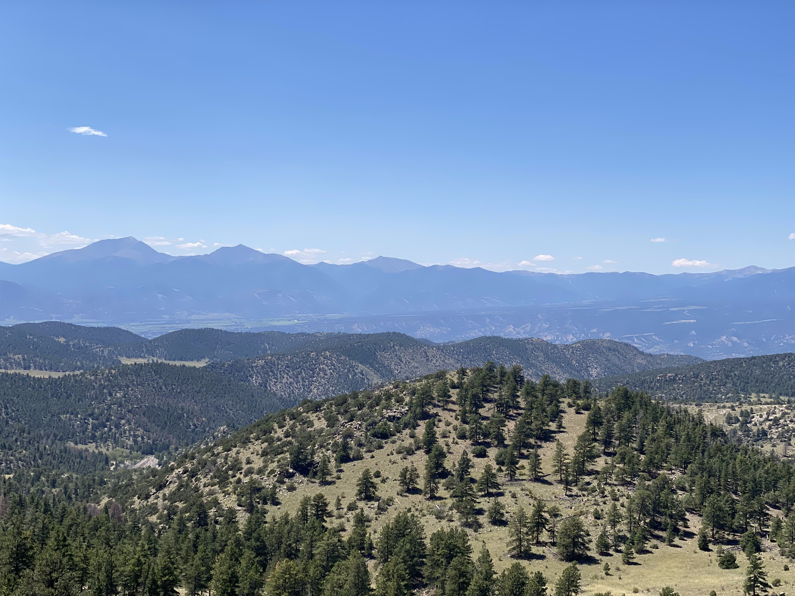

Section 5
Section 5 goes out of the basin and through most of Colorado, running from Wamsutter, WY, to Salida, CO. After the dry and desolate basin, it was nice to see more green and more frequent towns.
Day 34
I made use of the laundry at the motel before leaving. I was in contact with the bikers from Helena and we were planning on meeting up where our paths next intersected, about 120 km from where I was. There was a campsite 110 km away so I aimed for that so that we could meet the next morning. Leaving Wamsutter, the road was washboarded but it got better the further I got from town. When I looked back towards Wamsutter, a black cloud was hanging over the town, with the wind pushing it towards me.
That also gave me a nice tailwind. The flat road eventually crossed the highway and snaked into the hills, on "Wild Cow Road". The name was quite fitting. The wind kept working in my favor, making climbs feel easier than they should have been. I got caught in some rain, which made the road sticky for the next hour or so. Climbing wasn't bad, but going downhill kicked up huge amounts of mud. Some of it got kicked into my derailleur, threatening to break it. The sun eventually dried the road back up before any major descents.
I heard some rustling on the side of the trail which got quite loud as I passed by. I turned to find what was making the noise, and saw an angry looking rattlesnake, coiled in the grass.
I got the heebie jeebies real good after that. Turns out I am very scared of snakes, I just never got the chance to discover that since they're so rare where I'm from. Staying far away from either edge of the road, and on the lookout for any new threats, I continued up the hill. The fear cemented after seeing another rattlesnake ran over on the road, giving me a sense of how big the snakes could get. Zero bears in 30+ days but two snakes in less than an hour. The top of the climb was still rewarding, despite the snakes, treating me with a memorable view of the mountains just inside the Colorado border.
The downhill took me on a very steep and choppy road. I could put my new panniers to the test here, and was happy to see they held onto the bike really well. Near the bottom of the hill, there was a group of 8 ish cows. I was making noise for them to get out of the way, but two cows in the middle of the trail were coupling . Without pausing, they shimmied to the edge of the trail so that I could pass. How rude of me to interrupt. The road I was on ran along property lines, so it did not wind at all for hills in the way. I got a bonus 60 meter climb too steep to bike up before hitting the highway. Once I got to the highway, I had an easy 8 km to the campsite. As I rode into the campground, the host came out to greet me, filled up my water, and lit up my site with truck headlights while I was setting up camp. I had a clear starry night to enjoy while making dinner.
Day 35
I was planning to meet the group at 8:30 at a nearby junction where our routes converged. I cut it close and underestimated how long it would take for me to bike there since it was all uphill. But all that rushing was for nothing since they weren't there when I showed up at 8:37. I didn't think they'd leave so quick without me, so I waited around. 20 minutes later, they showed up! Joe, Brandon, and Kent were a joy to bike with.
We followed the river for a while, then broke off into the mountains for a climb. The road was pretty quiet, but for the occasional vehicle that drove past, the rider in the front or back would yell to alert the group. The heat today was exhausting but we had plenty of breaks and shade to rest in. It was nice to have others to pace off of going up the hills. The climb brought us through aspen forest. The greenery was refreshing after the basin last week. At the top of the climb, the gravel road turned to pavement, and we entered the town of Columbine. We took a quick rest here, refilled our water, and enjoyed the air conditioning in the store.
Starting downhill, I quickly realized how much my new panniers slowed me down. Apparently, they created a lot of drag. I had to pedal downhill just to keep the group in my sight. After the main downhill section, we came across a possible closed road along the route. Not wanting to risk any backtracking, we just followed the highway instead. We stopped at another general store along the route, and met up with Sarah, who has been biking with the others and took off a bit earlier than them this morning. After some snacks and ice cream, we continued back along the highway. We rode single file, taking turns breaking the wind at the front of the group. I've never ridden in a group along the road before this, so I was amazed with how much energy was saved from drafting. The drafting plus a slight downhill made 35km/h seem effortless. The shoulder on the highway started to get narrow, but the passing cars gave us space. We broke off the main highway right before Steamboat Springs, and followed a path into town. It was great not having to navigate in the city. Joe and Brandon had a GPS on their handlebars which saved me from needing to look at my phone to get the next few turns. Planning to take a rest day tomorrow, we got a hotel in town for two nights. At dinner, after ordering and devouring appetizers, mains, and dessert, the waiter guessed that we were either on a long hike or a long bike ride. Even though we were packed like sardines in the hotel room, it still felt like luxury compared to sleeping in a tent.
Day 36 (Rest Day)
We spent the day riding around town and visiting bike shops for parts. Since installing the new chain in Lima, the chain was grabbing the 10th gear whenever I was pedalling hard in 11th gear. I was trying to troubleshoot this for the better part of an hour, but could not figure it out. Although I didn't realize it at the time, it was what I got for trying to save money on the chain. The cheaper chain had slightly thicker links, which was enough to rub against the smaller gear and occasionally get grabbed by it. Every time that happened I felt like my feet were going to fly off the pedals, so it was frustrating and scary at the same time. Until I got a new chain, I just avoided the 11th gear. With the upcoming hills, it's not like I needed it that often anyways.
It's always hard to gauge how much to eat on a rest day. Since you don't end up using the energy you eat, it's easy to end up in a food coma. We all spent the rest of the afternoon in that state.
Day 37
I was on the lookout for a camp pot set since I got the panniers, and I found one in a discount sports goods store in town. Excited to make use of the set, before leaving town I bought all the ingredients for a broccoli cheddar soup. Since I now had the pot, I tried to send my kettle back home, but it was going to be almost $50. I declined, and sentimentality made me hold onto it for the rest of the trip. Joe waited around with me so we were catching up to the rest of the group all morning.
On the way downhill, there was a creek crossing. It was hard to gauge exactly how deep it was but by the time I could think it through, I rode straight through. I made it across mostly fine, with just my shoes getting soaked from the splashing water. After a long climb, we passed several false peaks before heading downhill again. We stopped at a campground next to the Colorado river, and I started cooking my dinner. The campground did not take in person site bookings, and would not be alright with us camping there unless we made a reservation on their online booking system. The issue was that we didn't have reception. The closest reception would be 15km up a hill, and none of us felt like biking that. Luckily, Kent was able to text his wife through his sat phone to make a reservation, which saved us from being kicked out. After that, the camp host was very nice. The soup turned out amazing! But the dishes were a hassle to clean with cold water.
Day 38
The group was very patient with me as I went through my morning at a much more leisurely pace than them. My sleeping bag and bedroll were still out by the time everyone else had their tent packed away. I took the hint and rushed through, urging them not to wait for me and that I would catch up. But they waited (so nice!), and we got going a little earlier than I was used to. The day started with a moderate climb but gave us some magnificent views of the Colorado river.

The first hill was over before we knew it, and we rode down to Kremmling for a late breakfast. I got a to-go pint of ice cream from the dollar store, and semi-successfully ate that while biking out of town. The next pass started out winding through open ranchlands. The nearby storm clouds looked threatening but weren't blowing in our direction. At the top of the pass, I felt the elevation in how cold it got. We were at 2800m, the highest point on the whole trail so far. I layered up for the downhill, and started riding. Everyone else zoomed ahead and I was once again reminded of the drag my panniers were creating. Despite that, I still covered 8km in 10 minutes. My girlfriend, Carley, who was in Denver was driving out to meet me, so I let her know where we were stopping, and we rode along the highway towards Silverthorne. The highway was quite busy with the weekend traffic. We made it to the campground, roughly 5 miles from Silverthorne, and the group set up camp. Carley got there a few minutes after us. I broke down my bike to fit in the car, and we drove off to a campsite near Breckenridge.
Day 39 (Rest Day)
Carley and I spent most of the day at the site. We took a trip out to Breckenridge to try out paddle boarding with her dog. 10 minutes after we got onto the lake, we started getting rained on. We fought the wind back to shore, and called it after a whole 20 minutes on the lake. After that, we got some ingredients for burgers and some firewood, then headed back to camp. A couple days back I brought up the fact that we could climb a 14er in Colorado while biking through, since we'd probably pass by a few. They seemed amused with the idea and we decided to make that happen in Breckenridge. We decided that tomorrow, we would climb Quandry peak.
Day 40 (Rest-ish Day)
We got up early to catch the bus that would take us to the trailhead. I got a half dozen donuts, and waited with Carley for Brandon, Joe, and Kent to show up. Sarah decided to continue on since we were spending two days in Breckenridge, so she wouldn't be joining on the hike. The guys were wearing their bike cleats, and Carley was wearing sandals. I had a worn pair of runners, and had the best footwear out of the whole group. Regardless, we made it to the top with minimal problems. The way down was a bit more testing, with the cleats and sandals being pushed to their limits. The local mountain goats were also being rude to Carley's dog. We eventually made it down, and took the bus back to Breckenridge. Carley and I said our goodbyes, and I joined the group in a hotel in town. Jesse, the last guy from the group I met in Helena caught up with us after our two days off.

Day 41
The hotel we were staying in offered breakfast, so of course we took advantage of that. There was a conference at the hotel this weekend on "Numerical Methods for Multi Material Flow". Coincidentally, that is very closely related to my capstone project from University. We didn't stick around to see what they were presenting, mostly because we weren't invited. Brandon got a head start since he was picking up a supply drop from a post office with rural post office hours. So Joe, Jesse, and I took a leisurely morning, watched Letterkenny, and had seconds from the breakfast buffet.
We eventually started up Union Pass. The start was a little steep but it ended up on an old rail trail with a steady 3-4% grade. The descent was fun! A singletrack section broke off the gravel road a kilometer into the downhill, and we took that the rest of the way. Joe and Jesse started before me since I was layering up, so I went fast to try to catch up. After 20 minutes of a quick descent, I still didn't catch up. I stopped to check on them and it turned out they missed the turn onto the single track and had to climb back up to the entrance. We rode into Como, and turned onto a familiar highway, the 285. I drove through this valley a few times when I was visiting Carley in Denver.
The next section was fast with Jesse pulling us, but after a while, Joe and I dropped off. The road went through rolling foothills. The mix of sun and storm clouds made for some pretty views of the neighboring mountain range. Since Brandon went ahead today, he got caught in the storm and had to take shelter in a structure from an old campground next to the road.
At the next town, Hartsel, we all regrouped and planned where to set up for the night. Sarah was here a few days earlier and said the bar in town let people set up in their yard/patio in the back, as long as we gave them some business. We were planning on eating there anyways, so it worked out perfectly! We chatted as the sun went down and the cold chased us into our tents.
Day 42
At 2700m, the mornings are quite chilly. We agreed to leave by 8:00 the night before, but it wasn't until 7:30 that people started waking up and packing up. We didn't have a whole lot of climbing for the day, so the later start wasn't an issue. The rain from the day before hit the trail, so there were some puddles in the ruts in the road. I tried to bike straight through one of these and ended up falling off my bike after my front wheel washed out. Brushing the dirt off my shorts, I caught up to the group. Right before the peak, we got hit by a short but steep climb. We were treated to some amazing views of the next valley we would be riding into.
Heading downhill, the road was covered in loose dirt. I tried to pass Joe on one of the corners, and absolutely ate it as my front wheel washed out again. This time I was going 30km/h though so there was a bit more speed to be absorbed by the ground. I think my hip absorbed most of the fall. I crawled to the side of the road as Joe and Jesse picked up my bike and got me some water. I had a few scrapes on my elbow and knee, but I could hardly move my hip up. After a few minutes of assessing myself, my hip was the only thing that still hurt, so I tried to stand and walk around. I could still move my hip around, but it seemed my hip flexor wasn't in prime condition. I had to get on my bike from the left side since I could only lift my right leg over the frame of the bike. Jesse rode down the rest of the hill with me to Salida. I took my sweet time, still feeling a little shaken from the crash. This is the only downhill on the entire of the trip that I was wishing to be done with. I was tired at the bottom and let the guys find accommodations as I just thought of rinsing off all the dust from the fall and laying down. They found a hostel that would cost $30 per person, so we biked over there. After check in, I showered and dealt with the road rash. I limped around town to try to walk off my hip pain. I met up with the guys at a bike shop and suggested cooking butter chicken for dinner. We got all the ingredients, and started cooking. As we cooked, some thru hikers came through and checked into the hostel. A few were doing the Colorado trail, a few were doing the CDT. This was perfect since we realized we were cooking up way to much food for the four of us. After dinner and plenty of snacking, I spent the evening walking around, trying to test out my hip. Walking was a little tough, especially curbs. I wanted to stick with the group so I tested out how I felt on the bike after the walk. Luckily, the bike ride felt great! By the time I got back from the bike ride, everyone else was asleep. I tried to be as quiet as possible getting into bed to not disturb the others, but the pain in my leg made me react with a few grunts as I straightened out.
Continue reading about the next section of my trip here!